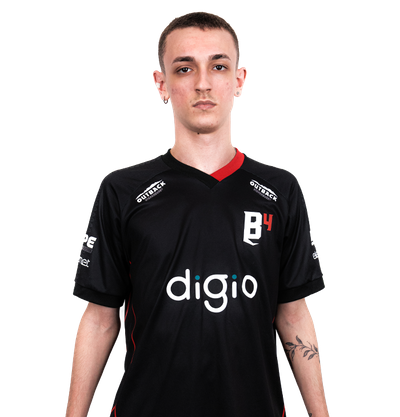
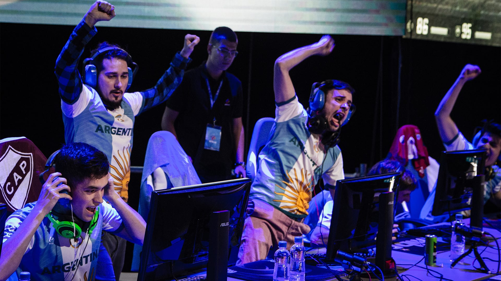
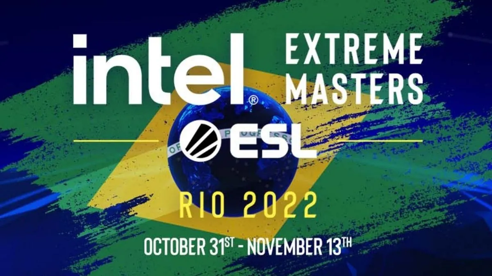
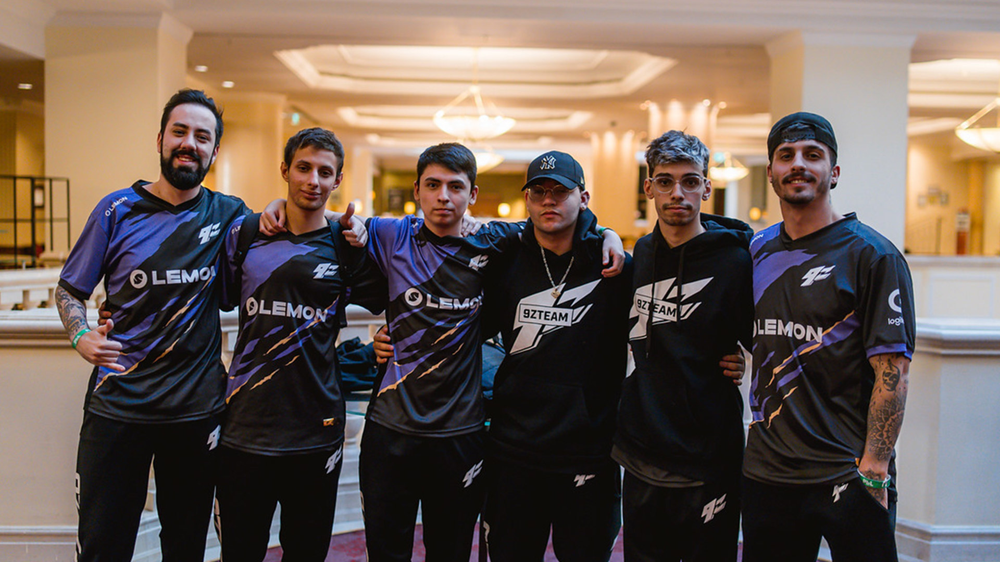

El medio Dust2 BR lanzó un artículo donde informan que las negociaciones entre 9z y B4 para contratar a nqz ya comenzaron.
El conjunto violeta estaría interesado en el awper brasileño de 17 años para ocupar el lugar que dejó Luken. 9z volvería a tener un jugador de Brasil luego de la salida de bit. Desde la organización intentaron hablar para contratar a try pero no era algo fácil económicamente. Además, según los últimos reportes, Santino se quedaría en 00 junto a Coldzera y los 3 que llegarían: TACO, dumau y latto.

07/06/22
MUNDIAL EN INDONESIA

Argentina volverá a tener un seleccionado de jugadores que representarán al país en un mundial de CS:GO. El torneo se va a realizar en Bali, Indonesia (IESF World Esports Championship 2022) El armado del equipo quedará a cargo de una comisión propuesta por equipos de Argentina.
Previo al mundial que será disputado en Diciembre, se jugarán los PANAM OPEN (que sería la clasificación para ir a Indonesia). De todas maneras Argentina ya tiene su cupo asegurado en el mundial entonces el PANAM OPEN se jugaría vs otros países solo por el prizepool de $40.000USD
¿Por qué Argentina ya está directamente en el mundial? Porque DEVA (federación Argentina que tiene el slot) tenía la posibilidad de elegir una disciplina grupal con representante directo en Bali y optaron por CS:GO. Es por esto que en el PANAM OPEN, Argentina sólo jugaría por el prizepool. DEVA está llevando a cabo la organización junto a los principales equipos de CS:GO de nuestro país. Las fechas de cada instancia pueden variar por eso no las voy a poner acá. Pero se espera que el PANAM OPEN sea en Agosto y el mundial de Bali en Noviembre/Diciembre de este año. El mundial repartirá un total de $500.000USD entre todas las disciplinas y aún no se especificó cuánto dinero será destinado a CS:GO.
Algunos detalles para que no queden sueltos:Cada organización que haya aceptado participar en ceder jugadores propondrá a una persona para que sea parte de la comisión técnica que decidirá que equipo viaja. No hay límite, podría ser una selección con 5 jugadores de diferentes equipos o incluso podrían ir hasta 5 jugadores de un mismo equipo (con la condición de que sean argentinos) Para cerrar: ESTO NO TIENE NADA QUE VER CON LA TWC donde Argentina quedó en segundo puesto. Hasta acá lo que puedo contar con lo que averigüe. Si me entero de algo más les aviso
ES OFICIAL: EL MAJOR SE HARÁ EN RIO DE JANEIRO, BRASIL.
Los playoffs serán en el Jeunesse Arena, con capacidad de hasta 22.000 personas. El torneo más importante de CS:GO se jugará en estas fechas y repartirá $1.000.000USD.
Challengers Stage: 31/10 - 3/11
Legends Stage: 5/11 - 8/11
Playoffs: 10/11 - 13/11 (Presencial en el Jeunesse Arena)
Las entradas comienzan a venderse MAÑANA 25/5 desde 14:00 hs. Importante: Si compraron tickets para el major de Brasil que se iba a hacer en 2020, aún sirven.

31/05/22
LUKEN SE VA DE 9Z
Esta tarde mediante un twittlonger, Luca "Luken" Nadotti anunció su salida del equipo.
El jugador argentino mencionó que se encuentra F/A buscando nuevas propuestas. El toro tiene intenciones de seguir compitiendo.En estos 3 meses que Luken y 9z estuvieron juntos el conjunto violeta logró el hecho histórico de jugar un major. Aun no hay mayores detalles de que pasará con el puesto que queda libre en 9z.
10/05/22
9Z ELIMINADO DE LA MAJOR
El conjunto violeta integradpor Max,Luken,Rox,Dgt y Davi1d quedo eliminado de la major. Su primer enfretamineto fue contra el conjunto de ENCE que perdieron 16-7, un partido que empezamos muy bien de TT pero no pudieron ganar rondas CT
El segundo partido fue contra un gran MIBR que venia jugando muy bien en los ultimos meses, el conjunto violeta jugo muy bien este partido pero hubo rondas muy importantes que no se pudieron ganar y eso causo efecto a la partida, el resultado fue de 16-14 un partido muy justo que los dejo con un mal sabor de boca.
Por ultimo jugaron contra Team Liquid Top 11 del mundo y perdieron un BO3 los dos mapas 16-11. Fueron dos partidos muy dificiles pero dejaron todo.

LOS MEJORES MOMENTOS DE LOS PARTIDOS